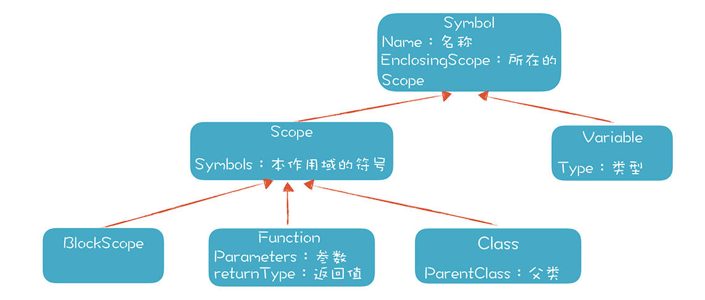
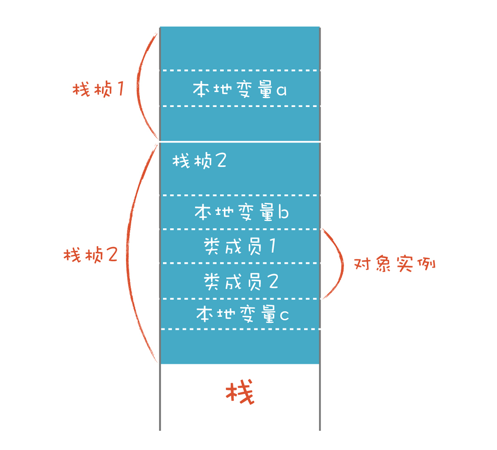

- 00 开篇词 为什么你要学习编译原理？.md.html
- 01 理解代码：编译器的前端技术.md.html
- 02 正则文法和有限自动机：纯手工打造词法分析器.md.html
- 03 语法分析（一）：纯手工打造公式计算器.md.html
- 04 语法分析（二）：解决二元表达式中的难点.md.html
- 05 语法分析（三）：实现一门简单的脚本语言.md.html
- 06 编译器前端工具（一）：用Antlr生成词法、语法分析器.md.html
- 07 编译器前端工具（二）：用Antlr重构脚本语言.md.html
- 08 作用域和生存期：实现块作用域和函数.md.html
- 09 面向对象：实现数据和方法的封装.md.html
- 10 闭包： 理解了原理，它就不反直觉了.md.html
- 11 语义分析（上）：如何建立一个完善的类型系统？.md.html
- 12 语义分析（下）：如何做上下文相关情况的处理？.md.html
- 13 继承和多态：面向对象运行期的动态特性.md.html
- 14 前端技术应用（一）：如何透明地支持数据库分库分表？.md.html
- 15 前端技术应用（二）：如何设计一个报表工具？.md.html
- 16 NFA和DFA：如何自己实现一个正则表达式工具？.md.html
- 17 First和Follow集合：用LL算法推演一个实例.md.html
- 18 移进和规约：用LR算法推演一个实例.md.html
- 19 案例总结与热点问题答疑：对于左递归的语法，为什么我的推导不是左递归的？.md.html
- 20 高效运行：编译器的后端技术.md.html
- 21 运行时机制：突破现象看本质，透过语法看运行时.md.html
- 22 生成汇编代码（一）：汇编语言其实不难学.md.html
- 23 生成汇编代码（二）：把脚本编译成可执行文件.md.html
- 24 中间代码：兼容不同的语言和硬件.md.html
- 25 后端技术的重用：LLVM不仅仅让你高效.md.html
- 26 生成IR：实现静态编译的语言.md.html
- 27 代码优化：为什么你的代码比他的更高效？.md.html
- 28 数据流分析：你写的程序，它更懂.md.html
- 29 目标代码的生成和优化（一）：如何适应各种硬件架构？.md.html
- 30 目标代码的生成和优化（二）：如何适应各种硬件架构？.md.html
- 31 内存计算：对海量数据做计算，到底可以有多快？.md.html
- 32 字节码生成：为什么Spring技术很强大？.md.html
- 33 垃圾收集：能否不停下整个世界？.md.html
- 34 运行时优化：即时编译的原理和作用.md.html
- 35 案例总结与热点问题答疑：后端部分真的比前端部分难吗？.md.html
- 36 当前技术的发展趋势以及其对编译技术的影响.md.html
- 37 云编程：云计算会如何改变编程模式？.md.html
- 38 元编程：一边写程序，一边写语言.md.html
- 加餐 汇编代码编程与栈帧管理.md.html
- 用户故事 因为热爱，所以坚持.md.html
- 第二季回归 这次，我们一起实战解析真实世界的编译器.md.html
- 结束语 用程序语言，推动这个世界的演化.md.html
- 捐赠
09 面向对象：实现数据和方法的封装
在现代计算机语言中，面向对象是非常重要的特性，似乎常用的语言都支持面向对象特性，比如Swift、C++、Java……不支持的反倒是异类了。
而它重要的特点就是封装。也就是说，对象可以把数据和对数据的操作封装在一起，构成一个不可分割的整体，尽可能地隐藏内部的细节，只保留一些接口与外部发生联系。 在对象的外部只能通过这些接口与对象进行交互，无需知道对象内部的细节。这样能降低系统的耦合，实现内部机制的隐藏，不用担心对外界的影响。那么它们是怎样实现的呢？
本节课，我将从语义设计和运行时机制的角度剖析面向对象的特性，带你深入理解面向对象的实现机制，让你能在日常编程工作中更好地运用面向对象的特性。比如，在学完这讲之后，你会对对象的作用域和生存期、对象初始化过程等有更清晰的了解。而且你不会因为学习了Java或C++的面向对象机制，在学习JavaScript和Ruby的面向对象机制时觉得别扭，因为它们的本质是一样的。
接下来，我们先简单地聊一下什么是面向对象。
面向对象的语义特征
我的一个朋友，在10多年前做过培训师，为了吸引学员的注意力，他在讲“什么是面向对象”时说：“面向对象是世界观，是方法论。”
虽然有点儿语不惊人死不休的意思，但我必须承认，所有的计算机语言都是对世界进行建模的方式，只不过建模的视角不同罢了。面向对象的设计思想，在上世纪90年代被推崇，几乎被视为最好的编程模式。实际上，各种不同的编程思想，都会表现为这门语言的语义特征，所以，我就从语义角度，利用类型、作用域、生存期这样的概念带你深入剖析一下面向对象的封装特性，其他特性在后面的课程中再去讨论。
- 从类型角度
类型处理是语义分析时的重要工作。现代计算机语言可以用自定义的类来声明变量，这是一个巨大的进步。因为早期的计算机语言只支持一些基础的数据类型，比如各种长短不一的整型和浮点型，像字符串这种我们编程时离不开的类型，往往是在基础数据类型上封装和抽象出来的。所以，我们要扩展语言的类型机制，让程序员可以创建自己的类型。
- 从作用域角度
首先是类的可见性。作为一种类型，它通常在整个程序的范围内都是可见的，可以用它声明变量。当然，一些像Java的语言，也能限制某些类型的使用范围，比如只能在某个命名空间内，或者在某个类内部。
对象的成员的作用域是怎样的呢？我们知道，对象的属性（“属性”这里指的是类的成员变量）可以在整个对象内部访问，无论在哪个位置声明。也就是说，对象属性的作用域是整个对象的内部，方法也是一样。这跟函数和块中的本地变量不一样，它们对声明顺序有要求，像C和Java这样的语言，在使用变量之前必须声明它。
- 从生存期的角度
对象的成员变量的生存期，一般跟对象的生存期是一样的。在创建对象的时候，就对所有成员变量做初始化，在销毁对象的时候，所有成员变量也随着一起销毁。当然，如果某个成员引用了从堆中申请的内存，这些内存需要手动释放，或者由垃圾收集机制释放。
但还有一些成员，不是与对象绑定的，而是与类型绑定的，比如Java中的静态成员。静态成员跟普通成员的区别，就是作用域和生存期不同，它的作用域是类型的所有对象实例，被所有实例共享。生存期是在任何一个对象实例创建之前就存在，在最后一个对象销毁之前不会消失。
你看，我们用这三个语义概念，就把面向对象的封装特性解释清楚了，无论语言在顶层怎么设计，在底层都是这么实现的。
了解了面向对象在语义上的原理之后，我们来实际动手解析一下代码中的类，这样能更深刻地体会这些原理。
设计类的语法，并解析它
我们要在语言中支持类的定义，在PlayScript.g4中，可以这样定义类的语法规则：
classDeclaration
: CLASS IDENTIFIER
(EXTENDS typeType)?
(IMPLEMENTS typeList)?
classBody
;
classBody
: '{' classBodyDeclaration* '}'
;
classBodyDeclaration
: ';'
| memberDeclaration
;
memberDeclaration
: functionDeclaration
| fieldDeclaration
;
functionDeclaration
: typeTypeOrVoid IDENTIFIER formalParameters ('[' ']')*
(THROWS qualifiedNameList)?
functionBody
;
我来简单地讲一下这个语法规则：
- 类声明以class关键字开头，有一个标识符是类型名称，后面跟着类的主体。
- 类的主体里要声明类的成员。在简化的情况下，可以只关注类的属性和方法两种成员。我们故意把类的方法也叫做function，而不是method，是想把对象方法和函数做一些统一的设计。
- 函数声明现在的角色是类的方法。
- 类的成员变量的声明和普通变量声明在语法上没什么区别。
你能看到，我们构造像class这样高级别的结构时，越来越得心应手了，之前形成的一些基础的语法模块都可以复用，比如变量声明、代码块（block）等。
用上面的语法写出来的playscript脚本的效果如下，在示例代码里也有，你可以运行它：
/*
ClassTest.play 简单的面向对象特性。
*/
class Mammal{
//类属性
string name = "";
//构造方法
Mammal(string str){
name = str;
}
//方法
void speak(){
println("mammal " + name +" speaking...");
}
}
Mammal mammal = Mammal("dog"); //playscript特别的构造方法，不需要new关键字
mammal.speak(); //访问对象方法
println("mammal.name = " + mammal.name); //访问对象的属性
//没有构造方法，创建的时候用缺省构造方法
class Bird{
int speed = 50; //在缺省构造方法里初始化
void fly(){
println("bird flying...");
}
}
Bird bird = Bird(); //采用缺省构造方法
println("bird.speed : " + bird.speed + "km/h");
bird.fly();
接下来，我们让playscript解释器处理这些看上去非常现代化的代码，怎么处理呢？
做完词法分析和语法分析之后，playscript会在语义分析阶段扫描AST，识别出所有自定义的类型，以便在其他地方引用这些类型来声明变量。因为类型的声明可以在代码中的任何位置，所以最好用单独的一次遍历来识别和记录类型（类型扫描的代码在TypeAndScopeScanner.java里）。
接着，我们在声明变量时，就可以引用这个类型了。语义分析的另一个工作，就是做变量类型的消解。当我们声明“Bird bird = Bird(); ”时，需要知道Bird对象的定义在哪里，以便正确地访问它的成员（变量类型的消解在TypeResolver.java里）。
在做语义分析时，要把类型的定义保存在一个数据结构中，我们来实现一下：
public class Class extends Scope implements Type{
...
}
public abstract class Scope extends Symbol{
// 该Scope中的成员，包括变量、方法、类等。
protected List<Symbol> symbols = new LinkedList<Symbol>(
}
public interface Type {
public String getName(); //类型名称
public Scope getEnclosingScope();
}
在这个设计中，我们看到Class就是一个Scope，Scope里面原来就能保存各种成员，现在可以直接复用，用来保存类的属性和方法，画成类图如下：

图里有几个类，比如Symbol、Variable、Scope、Function和BlockScope，它们是我们的符号体系的主要成员。在做词法分析时，我们会解析出很多标识符，这些标识符出现在不同的语法规则里，包括变量声明、表达式，以及作为类名、方法名等出现。
在语义分析阶段，我们要把这些标识符一一识别出来，这个是一个变量，指的是一个本地变量；那个是一个方法名等。
变量、类和函数的名称，我们都叫做符号，比如示例程序中的Mammal、Bird、mammal、bird、name、speed等。编译过程中的一项重要工作就是建立符号表，它帮助我们进一步地编译或执行程序，而符号表就用上面几个类来保存信息。
在符号表里，我们保存它的名称、类型、作用域等信息。对于类和函数，我们也有相应的地方来保存类变量、方法、参数、返回值等信息。你可以看一看示例代码里面是如何解析和记录这些符号的。
解析完这些语义信息以后，我们来看运行期如何执行具有面向对象特征的程序，比如如何实例化一个对象？如何在内存里管理对象的数据？以及如何访问对象的属性和方法？
对象是怎么实例化的
首先通过构造方法来创建对象。
在语法中，我们没有用new这个关键字来表示对象的创建，而是省略掉了new，直接调用一个跟类名称相同的函数，这是我们独特的设计，示例代码如下：
Mammal mammal = Mammal("dog"); //playscript特别的构造方法，不需要new关键字
Bird bird = Bird(); //采用缺省构造方法
但在语义检查的时候，在当前作用域中是肯定找不到这样一个函数的，因为类的初始化方法是在类的内部定义的，我们只要检查一下，Mammal和Bird是不是一个类名就可以了。
再进一步，Mammal类中确实有个构造方法Mammal()，而Bird类中其实没有一个显式定义的构造方法，但这并不意味着变量成员不会被初始化。我们借鉴了Java的初始化机制，就是提供缺省初始化方法，在缺省初始化方法里，会执行对象成员声明时所做的初始化工作。所以，上面的代码里，我们调用Bird()，实际上就是调用了这个缺省的初始化方法。无论有没有显式声明的构造方法，声明对象的成员变量时的初始化部分，一定会执行。对于Bird类，实际上就会执行“int speed = 50;”这个语句。
在RefResolver.java中做语义分析的时候，下面的代码能够检测出某个函数调用其实是类的构造方法，或者是缺省构造方法：
// 看看是不是类的构建函数，用相同的名称查找一个class
Class theClass = at.lookupClass(scope, idName);
if (theClass != null) {
function = theClass.findConstructor(paramTypes);
if (function != null) {
at.symbolOfNode.put(ctx, function);
}
//如果是与类名相同的方法，并且没有参数，那么就是缺省构造方法
else if (ctx.expressionList() == null){
at.symbolOfNode.put(ctx, theClass); // TODO 直接赋予class
}
else{
at.log("unknown class constructor: " + ctx.getText(), ctx);
}
at.typeOfNode.put(ctx, theClass); // 这次函数调用是返回一个对象
}
当然，类的构造方法跟普通函数还是有所不同的，例如我们不允许构造方法定义返回值，因为它的返回值一定是这个类的一个实例对象。
对象做了缺省初始化以后，再去调用显式定义的构造方法，这样才能完善整个对象实例化的过程。不过问题来了，我们可以把普通的本地变量的数据保存在栈里，那么如何保存对象的数据呢？
如何在内存里管理对象的数据
其实，我们也可以把对象的数据像其他数据一样，保存在栈里。

C语言的结构体struct和C++语言的对象，都可以保存在栈里。保存在栈里的对象是直接声明并实例化的，而不是用new关键字来创建的。如果用new关键字来创建，实际上是在堆里申请了一块内存，并赋值给一个指针变量，如下图所示：

当对象保存在堆里的时候，可以有多个变量都引用同一个对象，比如图中的变量a和变量b就可以引用同一个对象object1。类的成员变量也可以引用别的对象，比如object1中的类成员引用了object2对象。对象的生存期可以超越创建它的栈桢的生存期。
我们可以对比一下这两种方式的优缺点。如果对象保存在栈里，那么它的生存期与作用域是一样的，可以自动的创建和销毁，因此不需要额外的内存管理。缺点是对象没办法长期存在并共享。而在堆里创建的对象虽然可以被共享使用，却增加了内存管理的负担。
所以在C语言和C++语言中，要小心管理从堆中申请的内存，在合适的时候释放掉这些内存。在Java语言和其他一些语言中，采用的是垃圾收集机制，也就是说当一个对象不再被引用时，就把内存收集回来。
分析到这儿的时候，我们其实可以帮Java语言优化一下内存管理。比如我们在分析代码时，如果发现某个对象的创建和使用都局限在某个块作用域中，并没有跟其他作用域共享，那么这个对象的生存期与当前栈桢是一致的，可以在栈里申请内存，而不是在堆里。这样可以免除后期的垃圾收集工作。
分析完对象的内存管理方式之后，回到playscript的实现。在playscript的Java版本里，我们用一个ClassObject对象来保存对象数据，而ClassObject是PlayObject的子类。上一讲，我们已经讲过PlayObject，它被栈桢用来保存本地变量，可以通过传入Variable来访问对象的属性值：
//类的实例
public class ClassObject extends PlayObject{
//类型
protected Class type = null;
...
}
//保存对象数据
public class PlayObject {
//成员变量
protected Map<Variable, Object> fields = new HashMap<Variable, Object>();
public Object getValue(Variable variable){
Object rtn = fields.get(variable);
return rtn;
}
public void setValue(Variable variable, Object value){
fields.put(variable, value);
}
}
在运行期，当需要访问一个对象时，我们也会用ClassObject来做一个栈桢，这样就可以像访问本地变量一样访问对象的属性了。而不需要访问这个对象的时候，就把它从栈中移除，如果没有其他对象引用这个对象，那么它会被Java的垃圾收集机制回收。
访问对象的属性和方法
在示例代码中，我们用点操作符来访问对象的属性和方法，比如：
mammal.speak(); //访问对象方法
println("mammal.name = " + mammal.name); //访问对象的属性
属性和方法的引用也是一种表达式，语法定义如下：
expression
: ...
| expression bop='.'
( IDENTIFIER //对象属性
| functionCall //对象方法
)
...
;
注意，点符号的操作可以是级联的，比如：
obj1.obj2.field1;
obj1.getObject2().field1;
所以，对表达式的求值，要能够获得正确的对象引用，你可以运行一下ClassTest.play脚本，或者去看看我的参考实现。
另外，对象成员还可以设置可见性。也就是说，有些成员只有对象内部才能用，有些可以由外部访问。这个怎么实现呢？这只是个语义问题，是在编译阶段做语义检查的时候，不允许私有的成员被外部访问，报编译错误就可以了，在其他方面，并没有什么不同。
课程小结
我们针对面向对象的封装特性，从类型、作用域和生存期的角度进行了重新解读，这样能够更好地把握面向对象的本质特征。我们还设计了与面向对象的相关的语法并做了解析，然后讨论了面向对象程序的运行期机制，例如如何实例化一个对象，如何在内存里管理对象的数据，以及如何访问对象的属性和方法。
通过对类的语法和语义的剖析和运行机制的落地，我相信你会对面向对象的机制有更加本质的认识，也能更好地使用语言的面向对象特性了。
一课一思
我们用比较熟悉的语法实现了面向对象的基础特性，像Ruby、Go这样的语言，还有另外的机制来实现面向对象。思考一下，你所熟悉的语言的面向对象机制，在底层是如何实现的？它们在类型、作用域和生存期三个方面的特点是什么？欢迎在留言区分享你的发现。
最后，感谢你的阅读，如果这篇文章让你有所收获，也欢迎你将它分享给更多的朋友。
我将本节课相关代码的链接放在了文末，供你参考。
© 2019 - 2023 Liangliang Lee. Powered by gin and hexo-theme-book.